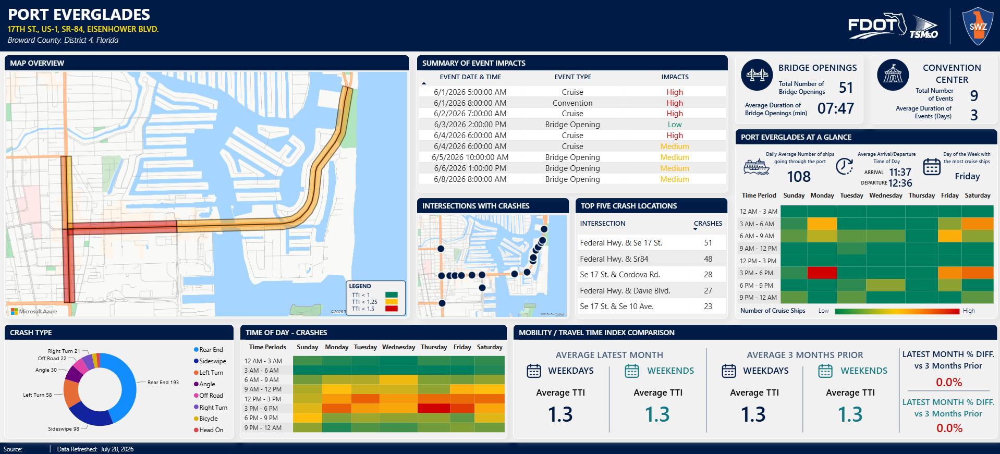
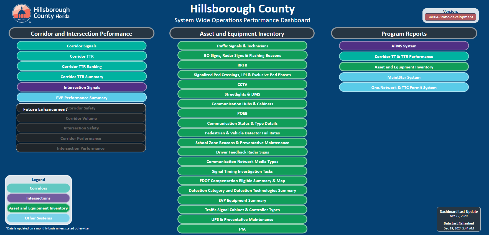
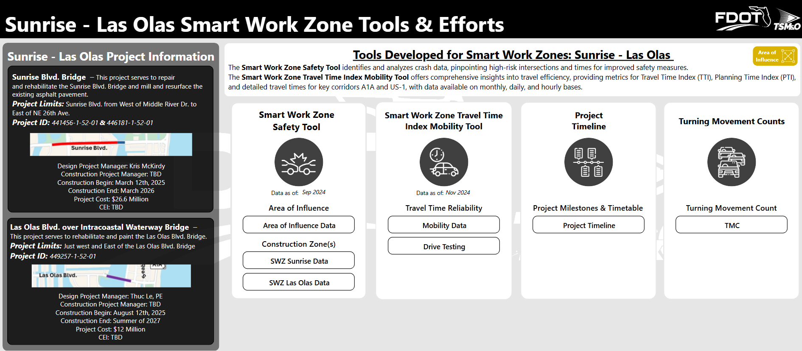
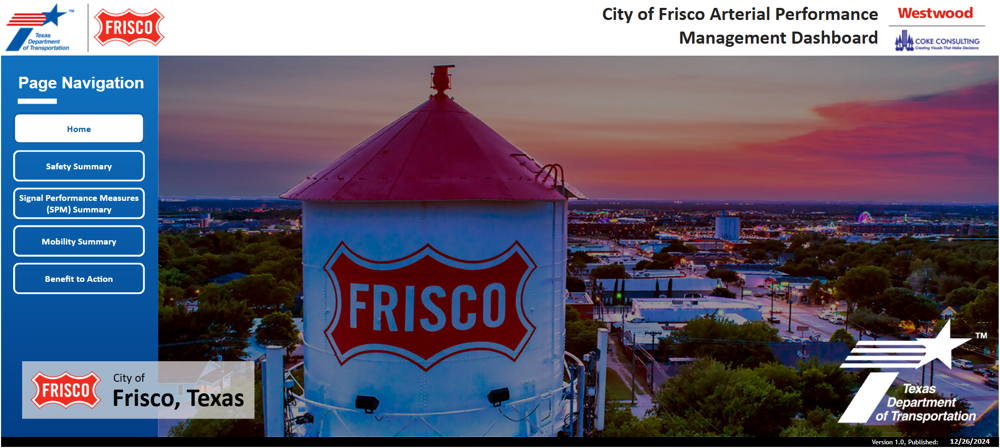
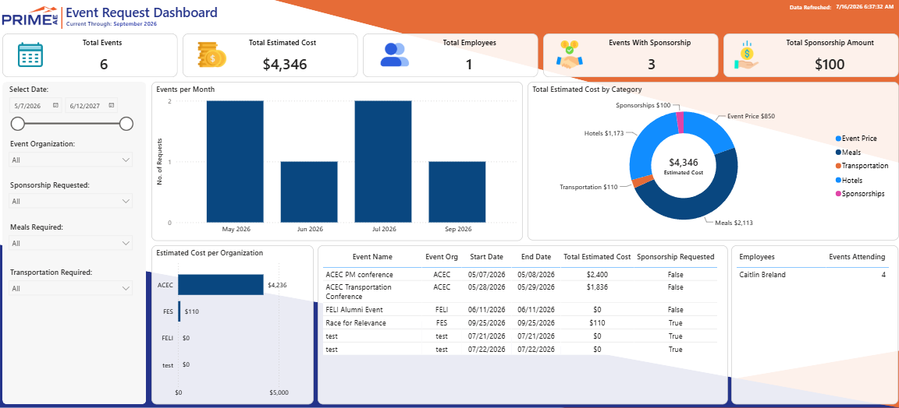

I combine civil engineering expertise with modern data analytics to solve transportation challenges. I build automated data pipelines, analyze large traffic datasets, and develop interactive Power BI dashboards that help agencies improve mobility, monitor Smart Work Zones, and make informed operational decisions.
View Projects Contact MeI specialize in connecting transportation engineering with data analytics, data visualization, and automation.
As a Transportation Data Analyst with a background in civil engineering, I work with mobility, safety, traffic operations, and infrastructure data. My work involves transforming complex datasets into useful tools that help project teams and public agencies better understand transportation performance.
I develop Power BI dashboards, write Python and SQL workflows, connect to APIs, automate data-processing pipelines, and perform spatial analysis using GIS tools. My projects have included corridor performance analysis, travel-time reliability, Smart Work Zone monitoring, crash analysis, bridge-opening analysis, traffic signal performance, and transportation event analysis.
I enjoy building solutions that do more than display data. My goal is to create reliable analytical systems that clearly explain what is happening, why it is happening, and where transportation improvements may be needed.
A selection of transportation, mobility, safety, and business intelligence projects developed using Power BI, Python, SQL, cloud services, and GIS tools.

An interactive Power BI dashboard designed to evaluate transportation activity surrounding Port Everglades. The analysis combines mobility data with cruise ship activity, bridge openings, convention events, and traffic safety records.
View Case Study
A systemwide transportation dashboard covering corridor performance, intersection operations, travel-time reliability, vehicle preemptions, and mobility trends across Hillsborough County.
View Case Study
A transportation performance dashboard used to evaluate mobility, safety, drive-test results, travel-time conditions, and project milestones along the I-95 Sunrise Express corridor.
View Case Study
A Power BI reporting solution that communicates systemwide mobility and safety performance through interactive maps, performance indicators, trend charts, and transportation metrics.
View Case Study
An internal business intelligence dashboard used to analyze employee event requests, estimated expenses, attendance, sponsorships, travel requirements, and organizational participation.
View Case StudyAn automated ETL workflow that retrieves transportation data from APIs, processes and validates records using Python, stores the results in cloud storage, and delivers refreshed datasets to Power BI.
View Case StudyTools and technologies I use to develop transportation analytics, automated data workflows, spatial analyses, and business intelligence solutions.